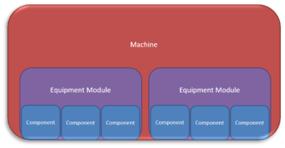
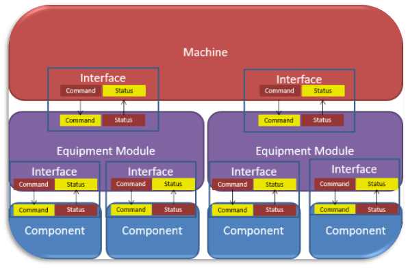
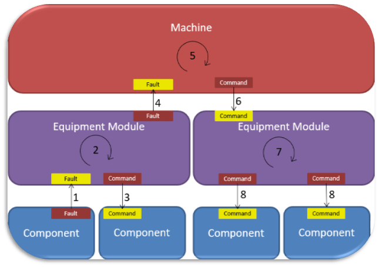
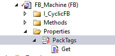
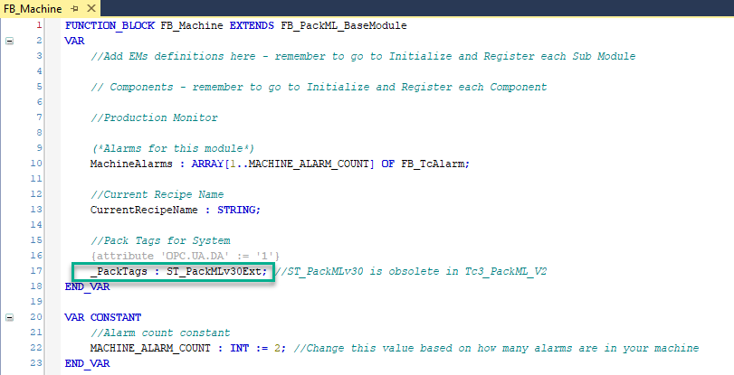
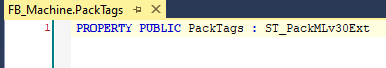
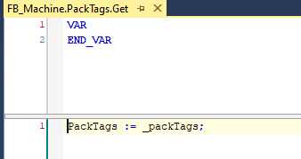

Design Guide
Overall Layout
The ideal approach is to have program components that are standardized, easily transferred to different machines, flexible enough to be customized and modified, and re-usable so that core components can be readily re-used amongst multiple machines and allow for future updates.
There is no one single “right way” to write code
There are however many best practices and different design approaches for writing software, the key item is consistency, when all programmers in a group follow the same approach to writing code, code is more readable, re-usable, and robust. Software development has not changed much since its inception. Software development tools have gotten a lot better and easier to use but base concepts such as Object-Oriented Programming have not changed since its creation in the 1960’s. The problem is many of these ideas and tools passed the PLC world by until now, now the PLC world is catching up. Cabinet designers and mechanical designers are very familiar with revision control. Checking parts of drawings out, editing them and checking back in is common practice. These processes originated in the programming world, and they were so successful, drawing packages have implemented them. PLC Software development tools now have these same capabilities (often free of charge) that the rest of the programming world has had for decades. Take advantage of these tools. The aim of this document is to present a few different ways how things can be done. It is up to the individual companies/teams to decide which ideas (if any) they like and will implement. PLC software development is no different to any other software development and it should be treated as such. All the tools available to the software development world are also available for PLC software development. When code is written in a consistent documented manner it will be easier to read, easier to modify, easier to re-use and easier to update. This saves money.
Plan the code
Very few physical things are built by trial and error, not unless there is lots of material to destroy and time to rebuild. So why does it happen with software? No one would ever say to the mechanical department, “Hey we've had some steel here for an hour someone should start building the frame. At least put the feet on the frame, we know the machine will need feet, that can be done right now, you weld those feet on to that beam”. Everything is first planned, then built, after that, it mostly fits together and there is very little re-work. No plan? Then in the beginning lots of things get built, it looks like progress is fantastic as things are being completed, but when it’s time to bring them together, they don't fit and they must be re-built and re-worked and all that perceived progress is gone, lots of time and material is wasted re-doing things. Code is no different, the more complete the plan the less re-work later.
Layers and interfaces
Everything, absolutely everything is accomplished via smaller components that work together. Break down any problem into small manageable complete pieces. Components interact with each other in layers via interfaces. Banking and bank machines are a perfect example. There are three layers. Customer, Bank Machine, and the Bank’s Account Database. The three talk to each other via interfaces. An interface is the simply the common connection at the boundary between two components. Where each component can say, “My responsibility ends at the interface” or “You don’t get to see anything past the interface”. The interface between the bank machine and the customer consists of a bankcard and a pin. To take money out, a customer puts the card into the machine and enters a pin. The bank machine’s interface to the bank is a secure network connection. Via the network connection the bank machine provides the account number, pin and how much money has been requested. The bank verifies the account, pin, and availability of funds. If funds are available, the bank tells the bank machine to go ahead and release the money. The bank machine counts the money, presents the money, confirms the user has taken the money and tells the bank to update the balance. Any bankcard and pin, any bank machine, any bank, it all works. Pesos, Dollars, Euro it does not matter, the interfaces are clear, well defined, and everything interchangeable.
Interfaces allow for Exchange
A key component of Interfaces is that they allow a component to be exchanged without affecting the other side. Take for example a car. The interface for using a car is the steering wheel, gas pedal, and brake pedal. Every licensed operator can use this interface, what goes on past that, does not matter, and should not concern the user. A diesel car can be exchanged for a gasoline or electric car, and it does not matter any, any operator can drive the car. When the interface is different, such as manual gearbox with a clutch, then not every operator can use, only operators that understand the extra interface can use the car.
The same works in machines, developing controls or modules with interfaces allows components to be exchanged without affecting other parts of the machine. Easier exchange of modules allows for more options with lower engineering costs and less risk.
Code should always be written in such a way that there is a defined interface to separate the inside of a piece of code from the outside. Interfaces should be as similar as possible. This makes it easier to change things later. If the interface to the car was to directly adjust the carburetor's fuel/air mix, then switching to an electric car is going to be significantly more work as the interface between the engines is drastically different.
Machine Built from Layers and Interfaces
A machine can be programmed in single block of code. It will be a nightmare to maintain, making adjustments will break existing functions, and virtually none of the code would be re-usable. Every machine built in this manner starts from scratch. Programming, as with any problem, is best solved by breaking it down into manageable pieces. Dividing a problem into layers allows for abstraction (interchangeable parts), and breaking components up into various pieces makes it easier for multiple programmers to handle simultaneously. Smaller components are more likely to be re-used. Three levels appear to be about right number. Machine, Equipment Module, Component. The machine coordinates multiple Equipment Modules. Equipment Modules coordinate multiple Components, and Components are made up of a series of base components where each performs a single specific function.

Abstraction
One of the key reasons for having layers is abstraction. This is the idea of "I don't need to know how" or "I don't want to know how X works I just need it to go". For the car, "I push on the gas pedal for the car to go". I do not care how it goes; my job is to deliver the pizza not to figure out how to burn fuel to turn the wheels. This is abstraction; nothing past the interface concerns me if it does what the interface says it will. Give me a car and I will deliver the pizza. It is up to the people building and maintaining the car to ensure that when the gas pedal is pressed, the car will go. For the machine to “do something”, it will issue commands to the Equipment Modules in whatever order is required for the machine to operate. The machine also responds to the status of the Equipment Modules, if an equipment module has a problem, the machine will determine what all other Equipment Modules must do. The machine only must deal with Equipment Modules. The machine does not care which or how many Components the Equipment Modules have. Equipment Modules can be exchanged for other Equipment Modules and the machine can deal with this easily.
Abstraction can make things very efficient. If all Equipment Modules have the same interface, IE they accept the same commands and return the same status, then equipment modules become interchangeable. For example, A company has built two Unwind Equipment Modules, one using Servo Motors and one using DC motors, provided both Unwind Equipment Modules use the same interface, one can be replaced with the other without any changes to the programming of the machine. The machine programmer can focus on coordinating the modules to make everything run, rather than wasting time figuring out how to get a module to perform its function.
Equipment Modules work with Components in the same way. The Equipment Modules coordinate the Components to perform a machine function. The Equipment Module issues commands to the Components and monitors the status of the Components to perform the function requested by the Machine.

Interfaces between layers should be as standardized as possible. For example, all axis’ should have the same commands and status. It would make no sense to have some axis to use the command Reset() to clear faults and another axis to use the function ClearError(). It is far faster and simpler to build an Equipment Module if the Components have similar commands and status and it is faster and simpler to build the Machine if Equipment Modules have similar interfaces.
Implementing Interfaces
There are many ways to implement interfaces, things like Variables, Methods, and Properties, but there is no single right way. All roads lead to Rome. The most important item is consistency. All roads might lead to Rome, but planes, trains and cars do not mix. Code should be written with the expectation that someone else (a user) will take the completed component and implement it. The “user” never has to look inside a component to have to get it to work. If a user must look inside a block to figure out how to use it, the user will generally throw the block out and write a new one. This new block now must be tested and debugged, a huge waste of time and money. Command Structures, Status Structures, Error Messages and Variable Naming should all be consistent between levels/modules. Exceptions to the standard, or blocks of code that behave differently require more time to implement, have more errors, take more time to debug/commission, are less likely to be re-used, and at the end of the day cost more money.
Getting Started - Machine vs Equipment Module vs Component
Where does one module end and another begin?
Determining what each level will do takes some time and must be well thought out. This is the core design, think it through, time spent here saves time later.
What happens when the layers are not well defined, or the interface is not clear?
Back to the Bank Machine example, there is an easy way to build a bank machine. Take a box of money, embed it in concrete and put a bunch of unlocked combination locks next to it. Give the serial numbers and combinations of the locks to the bank. To use the “bank box”. The user goes to the “bank box” and phones the bank. The user gives the bank their account number, pin, the serial number of the combination lock currently on the “bank box”, and how much money they want to withdraw. The bank looks up how much money is in the box; how much money is in the account and says OK here is the combination to that lock. Take your money, then take a new lock, and put it on the box. The bank then subtracts the amount of money the user told them from their account balance and updates how much money is left in the box. When the bank finally gets around to putting more money in the “Bank Box” the balance will almost certainly be wrong. At which point the “Bank Box Company” says, “It’s not my fault the user took out more money than they said they did, they didn't use it as described in the terms and conditions" When the components or layers are not properly defined and the responsibility of tasks is not correctly assigned, the phrase: “X works fine, they didn’t use X correctly” is commonly heard. If this is happening, either it is not clear how to use the interface, or the user of the component is performing tasks that the component should do itself. In the “Bank Box” machine example the user and the bank are doing the "Bank Box’s” tasks.
Figuring out which block is responsible for what is important.
The problem “you are not supposed to take out more money than you said you would” is easy to avoid when the bank box is responsible for dispensing the money and keeping track how much money is in the box. After a bit of examination, anything happening inside the box should be the boxes responsibility. The user should never be able to "see inside". The Bank should not have to keep track of how much money remains in the box before approving the withdrawal. The bank is worried about how much money is in the bank, not the box. If the user needs to look inside the component to use the component, the interface is incomplete. If someone needs to know how much money is in the box, the box should keep track of this and provide this value in the interface. If the user needs to provide external logic/functionality to get the block to do what it is supposed to, the functionally is incomplete and tasks need to be re-assigned.
What should each layer do?
Base Components / Components
Components are individual devices that perform a task, but they do perform a “Machine function”. For example, a solenoid can move forward and back, and axis can spin and stop at a position, but these things are not a machine function. An Equipment Module will implement Components such as Axis and Solenoids together with sensors, and other devices to perform a machine function such as a “Back Gauge” or “Unwinder” “Unloader or “Filler”
Components must be usable by any Equipment Module. EG The Axis Component. The Equipment Module function “Move Back Gauge” is implemented by commanding an “Axis Component” to go to a specific position. The Axis Component itself has no idea that it is controlling a Back Gauge or a Spindle or a Tension Roller, it simply has commands like “go to position X” The Equipment Module defines that this Axis Component is driving a Back Gauge.
Only Components talk to Hardware. Why? Abstraction. If only the Components talk to hardware, hardware can be replaced/exchanged without having to re-write the Equipment Module. If a DC motor Component has the same interface and functions as a Servo motor Component, then inside the Equipment Module one can be swapped for the other without making any coding changes to the Equipment Module. The Equipment Module’s only concern is the command “Go to position X” results in the Position X being reached. Servo may be faster and more precise, but so long as it goes to position X, the Equipment Module doesn’t care about the “How”.
Equipment Module Level
Equipment Modules, this is the important one, but it is also usually a more obvious one. The machine will be set up mechanically into individual modules. It is important to get the Equipment Module level right. If the Equipment Module is too low level, it is like driving the car by adjusting the airflow and fuel injection. The Machine level is doing things best done by the Equipment Module. Too high of a level and the Equipment Modules is doing too much work that the Machine should be doing. The car is doing everything including the navigation. One key to getting Equipment Modules correct is; If this module is removed from the machine, which components need to be included to dry cycle it? Can this module perform its function without other components? Can it be removed or replaced? An equipment module should perform a specific but complete function. An Equipment Module should not talk directly to hardware. It might need a sensors value and status, but a Component should be scaling the sensors value and monitoring the sensor to determine if the value is in an error range. A system can have as many Equipment Modules as it needs. Equipment modules might be simple, or they might be complex.
Machine Level
Determining the scope of the machine level is straightforward, it is the top layer, and it is what drives all other components. When a machine is provided with materials, it can complete its entire function. The machine however is not just the Main Program. The machine will have to talk to an operator. The Human Machine Interface (HMI) or Operator Interface is often a GUI (Graphical User Interface), but it does not need to be. The Operator interface could be a push button and a light. Eg to start, turn the key, wait for the green light then press the green button. To stop it push the red button. The main program may contain other programs to do other administrative tasks. For example, there may be a program to exchange data with the Operator Interface / HMI. There might be programs that connect to databases or IOT programs logging information etc. The machine level program as far as this document is concerned is dedicated to running the machine. The machine level block accepts commands, sequences the Equipment Modules, and reacts to alarms/errors of the Equipment modules.
Module Separation
As stated, the programmer at each level is concerned with their level and only their level only, that is why the interfaces exist, they give a clear definition of where responsibility ends. A module communicates only with one layer above and only with one layer below. For example, the Equipment Module, the equipment module receives commands from the Machine Layer via it's inputs/method calls. The Equipment Module then communicates to the Components which operate their hardware. The Machine has no business communicating directly with a Component. This abstraction allows Components to be replaceable without requiring the machine to be re-written. Eg Replacing a Servo drive with a DC Motor in the Unwind. The Equipment Module simply says “Component” run at this speed. The machine is none the wiser.
Error response/Error Propagation
Part of the separation of modules is the error handling. Compartmentalizing functions also means the errors can be compartmentalized. Errors have different meanings at different levels, each level gives the error context. "Axis 5 lag distance fault" is meaningless at the Machine Level. The Machine wants to know, “Was this error severe enough to stop the entire machine?” and the operator wants to know “how do I get back in operation”. When a Component has an error, it reports its specific error. The Equipment Module sees the Component error and determines what it means for the Equipment Module and reports an Equipment Module Error. The Machine sees the Equipment Module error and finally determines if the entire machine must be stopped or not. Axis 5? Lag distance fault? The back gauge is not in position. Do not allow machining of the part to start, the part isn’t in the right place.

The complete sequence of error reporting and reaction is as follows:
- Components reports error to the Equipment Module
- Equipment Module determines the appropriate reaction for its other Components
- Equipment Module issued commands to the Components
- Equipment Module Reports the Equipment Modules Error to the Machine.
- Machine determines appropriate reaction for the other Equipment Modules
- Machine issues commands to all Equipment Modules
- Equipment Modules process the commands
- Equipment Modules issue commands to the Components
For example, a Machine has an Equipment Module that is an X-Y table. Within the equipment module are two Axis Components, X and Y. The Component for the X-axis reports a lag distance fault. The Equipment Module sees this lag fault on the X-axis, determines that the Y-axis should be stopped immediately; it stops the Y-Axis and reports to the machine that the X-Y table is no longer operational due to a problem with the X-Axis. The machine sees that the X-Y Table is no longer functional and, in this case, determines that without the X-Y table nothing should operate. The Machine commands all Equipment Modules to stop and cannot be re-started until the X-Y Table Error is fixed, and the operator is informed the entire systems stopped due to the X-Y Table.
Error Logging vs Alarm Display
Everything should be logged, but not everything should be displayed. Each Module must log all its errors and timestamp it. Logs are for Service and the Development Engineers; Alarms are how the machine tells the operator what needs to be done to run. Alarms must be clear and relevant, with the most urgent displayed first. The operator will generally not be looking at the screen when the alarm was raised. When the operator arrives at the machine it must be readily apparent where the problem lies and what to do. Like everything, there are several ways to handle this. This is an important topic some of the first things written in the Components will be the error/fault reporting.
Following the error propagation sequence a root cause error at a component will generate 3 messages, one at the component, one at the equipment module, and one at the machine level. There are some options for handling this.
-
Each module reports its own error and via ID numbering schemes it can be determined all 3 errors are associated and either the HMI or the PLC ties makes the association to tie them together.
-
The lowest level module generating the error reports it, higher levels add information to the same alarm.
-
Only the machine layer reports the errors. The Machine layer knows “is told” via either configuration or programming of every possible message from the equipment modules and Components and manages them. This is often the “old school” way of doing things, every module/device provides a list of all possible errors and the machine and global error numbers are assigned.
-
Component faults are captured by the equipment module and only the equipment module provides the alarm up to the machine.
A traditional alarm handler looks through all the devices’ errors and determines what to report. With the core idea being modularity and interchangeability of components, this ends up being a duplication of effort. Every module within the machine has already had to recognize and react to the alarm, now a full second set of logic must look thorough all the faults on all modules and determine what messages to display. It can generally be surmised that the Component faults are the root cause but that may not be the case, if a safety system is tripped many components will fault and it can all happen in a single PLC cycle. Did the safety drop the power or did the power drop cause the safety system to trip? Properly timestamping and raising the fault/error/alarm directly makes sequencing easy.
Another option is alarms “drill down” when looking at the machine layer, equipment module errors are displayed, when looking at an equipment module, errors from the local components are displayed. X-Y table has an error, drill down to the X-Y table and the X axis jammed. To see the X axis jammed, the operator will have to look at the X-Y table equipment module. As Operators become more familiar with the machine, they will learn that the X axis lag distance fault means a jam they need to go fix. The operator doesn’t want to have to click on everything to see the root cause.
For modularity, it is very easy to have every device write to the list in the order things happen. The problem is if there is text associated with each alarm. This text must be translated; this means list of text must be exported/imported. If each device has its own list, then a bunch of different lists need to be sent for translation. This is not a significant problem, text for the messages can be stored in files or databases, but it must be managed. If the text is handled by the HMI, then it will need to be provided with these files or databases so that it can perform the text lookup.
Error/Fault Categorization/Classification
Regardless of the alarm handling methodology employed for modules are going to have unique faults and need to be readily identifiable and probably lots of them. Developing an error reaction to every single fault is not practical. Fault Categorization/Levels can help with this. To react to a fault, the severity of the fault is important, not the specific error message. Is the fault bad enough that this module must stop? Do other components also need to stop? Setting up Levels for faults greatly reduces the programming/implementation effort and ensures consistency between Modules. Note levels of the faults can also indicate how the fault should be reacted to. EG Critical/Abort the Machine or Equipment Module must be stopped immediately. Cycle Stop faults allow the equipment module to "finish" but they cannot be restarted. There seems to be no definitive standard on alarm categories and classes. ISA 18.2 does cover alarms but for plant alarms with things like Category 1 is severe, risk of loss of entire plant or environmental contamination outside the facility a little beyond our scope. Some systems implement 4 categories some recommend more.
The TwinCAT Event Logger logs 5 "PC event types" natively.
- Verbose
- Info
- Warning
- Error
- Critical
These categories could be used to determine the severity of the alarm or to differentiate between debugging/logging and errors and what the reaction should be. Eg Critical means the module has aborted and cannot receive new commands.
Other systems use error categories that determine the course of action the machine should take.
- Critical/Immediate Stop/Abort the Module/Component cannot/does not function
- Severe/Cycle Stop The Module should be stopped and not commanded again.
- Idle / machine functions hold preventing a next part to be started
- Hold/local condition. The machine can function but is low on a material
- Suspend/External. This Module/Machine is stopped waiting on other Modules/Machines from running.
- Warning Machine/Module operates but the user requires information about a condition that could lead to a higher category fault
- Info
A traditional variation on the theme is to allocate X bits to each module for each level where each bit represents an error. This makes some things easy, no bits set, no error but this only really works well up to 64 bits after that OR'ing multiple LWORDS gets complicated. 32 bits can be used to either represent 32 errors, or used as a UDINT, which can now represent 4.2 billion errors and via module ID's a scheme of errors can be configured to cover nearly every possibility. One advantage of this methodology is that all errors can be displayed simultaneously any error that is active is reported. If Error ID’s are used, one possibility is the module only reports the first or highest priority error often this is the only one that matters. A second option is the module could log to each error to an error handle as they appear even multiple errors in the same cycle. The third option is that the Module contains a list of sufficient length to report all currently active errors.
Regardless of the scheme is chosen, be consistent and clear the modules need to log their errors and keep track of their active errors so the alarm handler can report/acknowledge the alarms accordingly.
Having levels/categories can make the equipment module and machine level programming significantly easier. If category/level 1 faults mean the module will no longer work, then it's simple at the machine layer to say, for any level 1 error from this equipment module stop the entire machine. Level one error from this module? Finish the cycle and don’t start a new one.
Layout
Once it is known what everything must do, how to implement it?

Items at each level must talk to one level up and one level down. All blocks, regardless of what they are communicate via an interface.
Interfaces
As indicated before an interface is simply a defined way of two things interacting with each other. For code, that means how a piece of code A talks to with another piece of code B. A well-defined interface allows B to be replaced by C without requiring any changes to A. Back to the earlier car example, the diesel car can be replaced by electric car and the Intern is still able to go pick up lunch. Telling the Intern to take the skid steer and go get lunch is a recipe for disaster. This vehicle’s interface is drastically different and requires specialized training.
How do interfaces apply to PLC Code? All functions, function blocks, and add-on instructions have an interface. The input, output, and in/out variables define the interface. In TwinCAT 3 function blocks also have the capability of implementing Methods and Properties. Methods and Properties have been a staple of nearly major programming languages since the 1970’s. Methods are functions/subroutines for the Function Block called by the user. Methods are things that the Function Block can “do”. Method names should always be verbs. Properties are characteristics of the block, i.e. what the block “is” or “has” and should always be nouns. Back to the car example, methods would be Accelerate, Decelerate, Turn Left, and Turn Right. Properties would be things like Color, VIN Number and Number of seats. For the Bank Machine, Properties would be things like “CashInBox”, and methods would be “CallBank” and “DispenseCash”.
For blocks to be interchangeable, they must use the same interface. When building an interface, it needs to be determined what functionality must be provided and what data will be available. Which methods and properties each block must support, and which variables will be passed in and out. This process is a discussion, the user of the block and the builder of the block together need to determine what the interface will be. There will be changes as deficiencies are found.
Point to Point axis Components should be interchangeable. The ability to swap a stepper for a servo or a DC motor without changing the equipment module code is highly desirable. The same for the ability to swap one servo drive type/manufacturer for another. Different hardware will do things in different ways. The reset sequence for a stepper motor is very different from the reset sequence for a fieldbus connected servo motor. The Equipment Module that asks for a reset, does not care about “how” the reset is done, it just wants a reset done. Having separate Components that are interchangeable but “perform the same function” allows lower cost machine variation. Some customers may be willing to pay for high performance servo axis and some customers would prefer lower cost stepper motors. The easier it is to swap Components the lower the engineering cost for modifications.
For example, a simple Point to Point axis block could have the following interfaces:
Option 1: Methods, Properties, Inputs, Outputs and Var_In_Out
| Method | Property | Input | Output | InOut (cyclic) |
|---|---|---|---|---|
| Reset | Position (mm) | Enable | Error | Axis Reference |
| Move(Pos,Vel) | Position (inch) | Error ID | ||
| Stop | Busy | |||
| Ready |
The interface defines the rules for the Axis block. The “user” of the block reads the interface and knows what an axis can do, the person who builds the Axis block reads the interface and knows what features/functions to provide. If all different versions of axis blocks use the same interface, then anyone who knows how to use one axis block knows how to use all axis blocks regardless of whether it is a Linear, Servo, Stepper or Hydraulic axis. Same interface, same usage, directly exchangeable.
It is up to the company/programming team to define rules for creating interfaces. Should all inputs and outputs should be handled by Methods and Properties, or via Input and Output variables or both? It is just as easy to write Axis1.Reset := TRUE; as it is to say Axis1.Reset(); The same for outputs, Axis1.Error or Axis1.GetError(). Position could easily be an output, instead of a property.
Here are 4 more options for the PointToPoint Axis Block interface. Each has its own advantages and disadvantages. Choosing a consistent interface layout will key. Options 3 and 5 below have special advantage in that they can be declared as a type “Interface” which is described in the next section.
Option 2: Inputs and Outputs Only
| Input | Output |
|---|---|
| Enable | Position Inch |
| Reset | Position mm |
| Move | Error |
| Move Position | Error ID |
| Move Velocity | Busy |
| Stop | Ready |
This is the traditional approach for function blocks
Option 3: Methods and Properties Only
| Method | Property |
|---|---|
| Reset | Position Inch |
| Move (Pos,Vel) | Position mm |
| Stop | Error |
| Enable | Error ID |
| Disable | Busy |
| Ready |
Option 4: Inputs and Outputs with Command and Parameters
| Input | Output |
|---|---|
| CMD | Position Inch |
| P1 | Position mm |
| P2 | Error |
| Abort | Error ID |
| Reset | Busy |
| Start | Ready |
| CMD | Done |
This Interface requires a documentation for what each CMD number is what the Parameters P1 and P2 represent for different commands. For example, CMD = 1 could be a Move command where P1 is position and P2 is Velocity. CMD = 2 could be stop where P2 is the deceleration.
Option 5: Methods and Properties with Commands and Parameters
| Method | Property |
|---|---|
| Reset | Position Inch |
| CMD(P1,P2) | Position mm |
| Abort | Error |
| Error ID | |
| Busy | |
| Ready | |
| CMD Done |
Just like Option 4, Option 5 would need documentation about what each command is and what the parameters do for each Command.
Interface Data Type
For TwinCAT 3 there is an interface data type. Interfaces defined by a data type are much more rigid. When a defined data type interface is implemented, all Methods and Properties MUST be included. The code will not compile if a block implementing an interface does not do it fully. All blocks implementing an interface data type will be interchangeable the compiler forces this. This significantly improves the reusability and consistency of the code.
Variable Inputs, Variable Outputs and Var_In/Outs are not included in the Interface data type, and therefore the compiler does not force the programmer to use the same variable names. External documentation is required if programmers are to use the same variable names. Someone must document what the interfaces are to be (this can be done directly in the code) and the rules must then be enforced when documented interfaces are not being followed. “You didn’t follow the interface.” “You changed the name of the Execute variable to Go.” “Go back, look at the documentation and fix it”. When an Interface Data type is used, the code simply will not compile if the names of the properties and methods do not match to the declared interface. Again, there is no right/wrong choice here, what is important is that all interfaces are designed in a consistent way. Implementing some blocks with data type defined interfaces and others via variables, reduces readability, reduces re-usability, increases confusion, which ultimately requires more time/money than having a consistent system. Two formats may be appropriate, Blocks using inputs and outputs for the interfaces must follow a specific set of rules, as new blocks must be property and method only and follow another set of rules. Programming convention documents are not big documents, 3-5 pages is generally plenty.
A second huge advantage of using a Type Declared Interface is the ability to “code against the interface”. When “coding against an interface” the programmer can declare an instance of the interface and write all code using that interface only. This is extremely advantageous when Interfaces have been defined but no code has been built. The Equipment Module programmer can write all the code for a component before the Component is even started. The interface says it has a reset command and when it is complete it will be done or have an error. Eventually a Component that implements the interface will be completed. When it is ready to us it, simply assign the instance of the block to an instance of the block. Now all commands to the interface are issued to the actual block.

With such an interface, there can several axis blocks built for handling different hardware provided all axis blocks implement this interface, any axis block can be replaced with any other axis block and the higher-level program requires no changes. Want to change a Stepper to a Servo? Change one assignment statement or add an IF condition.
Extending Components
One “simple” option to handle the challenge of interchangeable components is to build one block that can do “everything”. For the axis block example, a single block can be built that has various options. The options would then indicate what hardware the block is to be connected to and what features it has. It could have options for steppers, options for different servos and options for different functions.
Great everything is in one block that can do “everything”. The problem is this block is never finished. It is continually being updated and its interface is continually changing and there’s so many options no one understands it. For Example, A new very low-cost version of stepper motor was sold as an option for an existing machine. It requires a digital output to enable it, and a digital output to reset it. “Cheap Digital Stepper” option is now added to the block, the block is given 2 more output variables, and the “Axis Type” which is likely an enumeration is extended for the new Cheap Digital Stepper type. This block will require a lot of documentation. When an instance of this block is created, it has every variable of every possible axis type included. This causes confusion. The same for if functionality is to be added. “Why are these inputs and outputs not linked, oh those are only there in the case Axis X was a cheap stepper motor we used one time 6 years ago”. When a new type of Cam Table is developed, this functionality must be added into the “do everything” axis block. Now all blocks even ones that do not use the new cam table function will have to contain large cam tables. If no one is taking care of ensuring this block is in a library there will end up being several partial complete versions of the block. One version might allow stepper control but not the new cam table. One might allow for a new cam table but not for a servo on fieldbus X.
The result is no one uses the “does everything” block because it’s too complicated.
Start Small and Extend to Add Features
Many blocks start with very high goals. For this project a new Servo block will be built, it will be able to do point to point motion, flying shear functionality, and handle multiple cam table switching. Every Axis in every project will use this block and all axis will have all possibilities.
In reality, maybe 2 of the axis in a project will need Cam Table switching. Someone is going to take a significant amount of time building this block. Most axis will likely only need basic point to point motion, but this all this functionality needs to be programmed, tested, and debugged before anyone can use it.
A better solution: Build a basic block for point-to-point motion. This block has one function, point to point. This block is great for any Equipment Module that needs point to point motion and doesn’t require any information about a master axis. This block is quick to build, test and debug and covers the basics, enable the axis reset the axis and move point to point, simple to build, simple to use.
Axis that requires synchronization will also need point to point motion. The point-to-point block can be extended. The extended block contains everything the original has, it has an axis reference and point to point motion, components that have already been tested and work. For synchronization it needs the master axis information. When the block is extended a master axis reference is added, and basic camming/gearing can be added. If an error is found is ever found in the point-to-point block, fixing it in the point-to-point block automatically fixes it in the extended Synchronization block. If a “Shortest way” option is added to the point-to-point block, it automatically appears in the Synchronization block. The programmer of the extended block can focus on the extension knowing the rest already works.
This idea of small blocks and extension, results in the most code re-use. The base axis from one project is now “in demand” for the next project because the block has been significantly tested and does not include things that are not necessary. For point to point, it is perfect. When the complexity is necessary, the Extended block is used. However, when the complexity is not required the simple base block can be used without the “clutter” of unused functionality.
If the basic block was chosen, and later it’s determined the extended block is necessary, no problem, switch the basic block for the extended version. The Extended block still contains the basic block and all the existing code that used the basic block still works for the extended version.
This is inheritance and this is probably the single most powerful feature available in TwinCAT 3. Extending blocks is always available, even if Interface Data types are not used. Blocks in libraries can also be extended. The extended block cannot break the base block, it can only add to it and only the new functionality requires testing and debugging. In the event the new block needs to change how a basic function works, the methods can be extended or overridden. If the new block has new hardware and the reset must be different? No problem, override the base block’s Reset method to include the code for handling the new hardware.
Define the Functionality
Now it is known which Equipment Modules and Components will exist and what the interfaces will look like, time to start writing code.
Not so fast! Before writing a single line of code, either on paper or in a spreadsheet determine what functions the Machine each Equipment Module must be able to do in each mode of operation and what happens in the case of an error level of error of each Module. Modules always has more than one mode of operation, it is going to require a manual mode for jogging axis after a jam, it may have a clearing mode to clear out partially completed products, and it will very likely have a dry cycle mode for operating without product. Everyone (management) is always concerned about Automatic/Producing mode; this is theoretically, where the machine makes money. This mode is important, but it is generally "easy" because everything is running. All the other modes, functions, and features take time to build, and they need to be planned in at start. Adding core functions later without planning has the most risk of “breaking” components already completed. Create a Document/Spreadsheet that does the following:
- Defines all modes of operation of the machine and each equipment module. It is common that different equipment modules will be in different operation modes at different times. Putting a single equipment module into manual while the machine is in production is fairly standard.
- Determines what each Module must do in each mode
- Contains a list of what Errors can occur each Module (this list will be added to as construction progresses)
Creating a table for each Equipment and Component and laying out the functionality in each mode does two things.
- It provides a complete scope of work of how many functions really must be implemented
- It clarifies the operation of the entire machine.
If the machine is built without a full plan, after the machine produces the first product comes the statement, "Great that works. Now during product change over before we load a new material, these two axis’ have to decouple and this one has to stop in order to release tension here." Whoa, wait, what?!? If I had known that I would have done all this slightly differently to accommodate that. Patching in unplanned functionality later typically causes the most unintended consequences. After patching in the new function, the next problem report is, "Uh, somehow while running the machine the operator started the load process, that decoupled the axes, released the tension, the film wrapped around the dancer and bent the arm, we need a new part machine will be down for a week".
Laying out the functionality for each Module takes time, it may take a couple of days or a week or more depending on the complexity of the machine. However, when completed the project timeline will be more accurate, it will save days/weeks of effort at the end of the project when time is most precious. The phrase "If we knew that, we would have done this instead" is a huge problem before run off. Now comes the debate, re-do a major component, which will prevent the machine from running until it is completed, or try to somehow shoehorn in the extra functionality. Usually, the shoehorn method is employed until it's finally determined that the block must be re-built, and even more time is lost.
Producing mode is important but the customer only complains when the machine is not producing. The end user paid for production mode, every minute the machine is not in production mode is costing money, getting the machine back into production quickly is where the money is.
There will be a sequence to start up the machine and there will be different functionality in different modes of operation. Commissioning, Maintenance, unsticking things after a jam, there's a lot of functionality needed that is not "automatic production". No problem, build a Mode handling and a state machine to help ensure functions from Manual mode are not accidentally triggered in Automatic mode. There are now two options, come up with your own Mode and State sequencing system, or follow a standard. For those who build/have their own Mode/State handling system, that is perfectly acceptable. Doing it your own way comes with the task of building/debugging your system, documenting your mode/state handling system, and teaching your system to other programmers, service people, and the end user. Having the ability to say this machine conforms to ISA TR88.00.02 makes things a lot simpler. The TR88.00.02 Implementation guide from OMAC describes the implementation of TR88 very well.
Style Guide
The style guide for the SPT framework follows the rules setup in the static analysis.
Naming Conventions - Prefixes
Instance Variables
Only instances of pointers and interfaces use a prefix in the SPT Style guide.
| Type | Prefix | Example |
|---|---|---|
| Pointer | p | pTest : POINTER TO INT; |
| Interface | ip | ipComponent : I_ComponentBase; |
Datatypes
| Type | Prefix | Example |
|---|---|---|
| Function Block | FB_ | FUNCTION_BLOCK FB_BasicAxis EXTENDS FB_CyclicFB IMPLEMENTS I_BasicAxis |
| Function | F_ | FUNCTION F_CreateAllEventsInClass |
| Interface | I_ | I_BaseFB |
| Structure | ST_ | TYPE ST_ComponentBase_HMI : |
| Enumeration | E_ | TYPE E_AlarmResponse : |
| Union | U_ | Union U_WordToBit : |
| Alias | T_ | TYPE T_Message : STRING[50];END_TYPE |
Naming Conventions - Variable Names
- Pascal Case
- All starting words are capitalized except where p or ip are used as prefixes
- Each new compound word is capitallized
- NO Hungarian notation!!!
- Use whole words instead of acronyms or shortned words when possible
Example
The variable LPotSw means nothing to a new set of eyes.
Whereas the variable PositiveOvertravelSwitch_Left does mean something to a new set of eyes.
Local Variables as properties
Where local variables are to be used outside of a function block, we create the variable name in the function block with an underscore prefix. Then the name of the property get/set is the variable name without the underscore.
Example:



